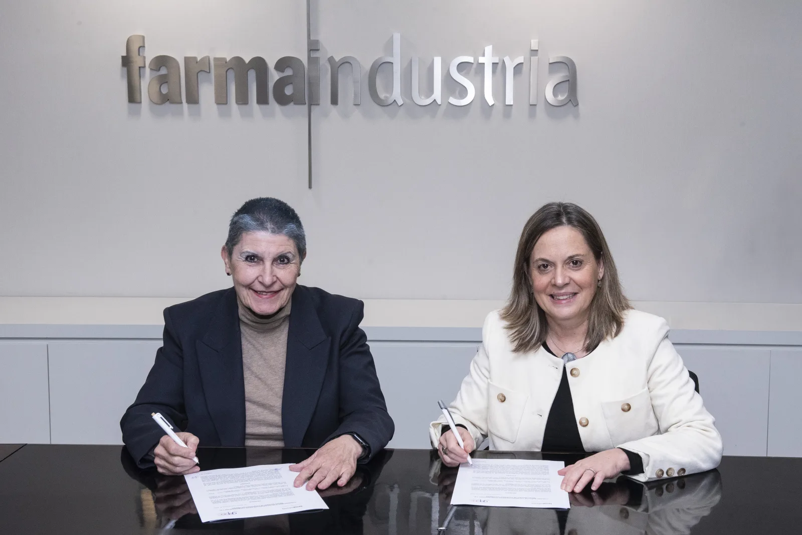
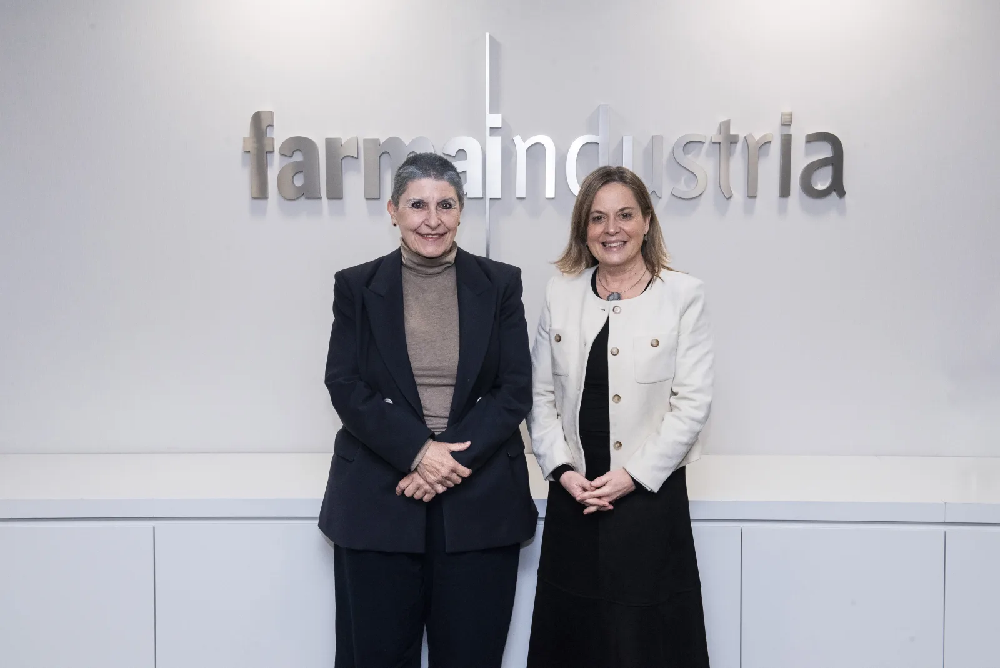

GEPAC y Farmaindustria firman un convenio para impulsar la investigación, la innovación terapéutica y la participación de los pacientes con cáncer.
Serie GEPAC · Firma del convenio con Farmaindustria GEPAC y Farmaindustria refuerzan su colaboración para impulsar la innovación y la participación de los pacientes con cáncer La colaboración entre las organizaciones de pacientes y la industria farmacéutica se ha consolidado en los últimos años como un elemento clave para avanzar hacia un sistema sanitario más participativo y centrado en el valor. En este contexto, el Grupo Español de Pacientes con Cáncer (GEPAC) y Farmaindustria han firmado un Convenio Marco de Colaboración orientado a reforzar la cooperación entre ambas entidades y a promover iniciativas conjuntas en el ámbito de la oncología.
La colaboración entre pacientes e industria en oncología El convenio pone el foco en la visibilización del movimiento asociativo de pacientes en España, con especial atención a las organizaciones vinculadas al cáncer, así como en el desarrollo de acciones destinadas a mejorar el conocimiento, la formación y la divulgación sobre enfermedades oncológicas. Ambas entidades coinciden en la necesidad de avanzar hacia modelos de colaboración más estrechos, que integren de forma real y efectiva a los pacientes en los procesos de investigación, desarrollo, evaluación y acceso a nuevos tratamientos. En este sentido, el acuerdo contempla también la elaboración conjunta de informes y estudios sobre aspectos clave de la oncología y sus tratamientos.
Empoderamiento del paciente y medición de resultados en salud Asimismo, el acuerdo refuerza la importancia de la medición de resultados en salud desde una perspectiva que vaya más allá de los indicadores clínicos tradicionales, incorporando aquellos resultados que realmente importan a los pacientes, como la calidad de vida, el acceso equitativo a la innovación y la experiencia asistencial.
Hacia un sistema sanitario más participativo y centrado en las personas Durante la firma del convenio, las presidentas de ambas entidades subrayaron la relevancia de situar a las personas con cáncer en el centro del sistema sanitario, promoviendo un modelo más participativo, transparente y orientado al valor. Esta colaboración se basa en el respeto mutuo y en el reconocimiento del papel fundamental que desempeñan las organizaciones de pacientes a lo largo de todo el proceso de investigación y desarrollo de nuevos tratamientos. El Convenio Marco tendrá una vigencia inicial de un año, con posibilidad de prórroga, e incorpora mecanismos de seguimiento que garantizan un desarrollo alineado con los objetivos comunes. Con este acuerdo, GEPAC y Farmaindustria refuerzan su apuesta por una oncología más innovadora, colaborativa y centrada en las necesidades reales de los pacientes.
Contenido elaborado por GEPAC · Firma del convenio con Farmaindustria Grupo Español de Pacientes con Cáncer (GEPAC)
